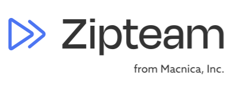
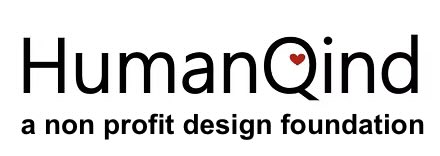
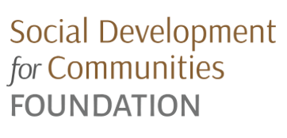

Affiliations




I explore how artificial intelligence, data science, and human-centered design drive equitable and scalable solutions in education, public health, and organizational development. By embedding fairness, transparency, and inclusive design into technical workflows, I aim to bridge cutting-edge AI innovation with societal impact.
Summary
I co-lead a research initiative in partnership with Zipteam to adapt their AI-driven skill- assessment and team formation platform for higher education. This project enables doctoral students in the DTech program at CGU to visualize and reflect on their competency development across their academic journey.
My Contributions
Research Focus and Questions
Tools & Methods
Python | scikit-learn | NLP | Responsible AI Auditing | User-Centered Design | IRB Compliance Impact & Vision
Impact & Vision
This work lays the foundation for scalable systems that enhance mentorship, academic advising, and interdisciplinary team formation, supporting student success in complex academic environments.
Summary
I co-develop an AI-enabled planning assistant to support early-stage impact teams with organizational planning, role clarity, and decision-making in resource-constrained settings. This system democratizes access to foundational planning tools for grassroots organizations.
My Contributions
Research Focus and Questions
Tools & Methods
Prompt Engineering | Human-Centered AI Design | Multimodal UX | Participatory Design Workshops
Impact & Vision
This project has the potential to scale across BOMA and World Merit networks, providing AI-assisted support to thousands of grassroots teams worldwide.
Summary
I co-lead CGU’s Ethical AI Hackathon, guiding interdisciplinary teams to build chatbot systems that embed fairness, accessibility, and data privacy from inception.
My Contributions
Research Focus and Questions
Tools & Methods
Ethical Impact Assessment Frameworks | Responsible AI Auditing | Workshop Facilitation
Impact & Vision
This hackathon demonstrates a replicable model for embedding ethics in AI innovation, fostering a new generation of responsible developers.
Summary
I develop predictive models to evaluate workforce attrition risks and optimize operational strategies in healthcare organizations
My Contributions
Research Focus and Questions
Tools & Methods
Python | Tableau | Predictive Analytics | Exploratory Data Analysis
Impact & Vision
This work supports healthcare providers in proactively managing workforce challenges and improving service delivery.